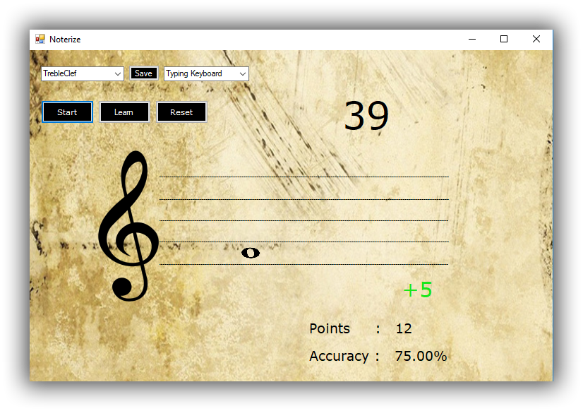
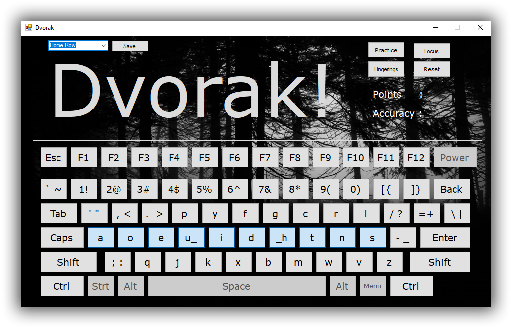
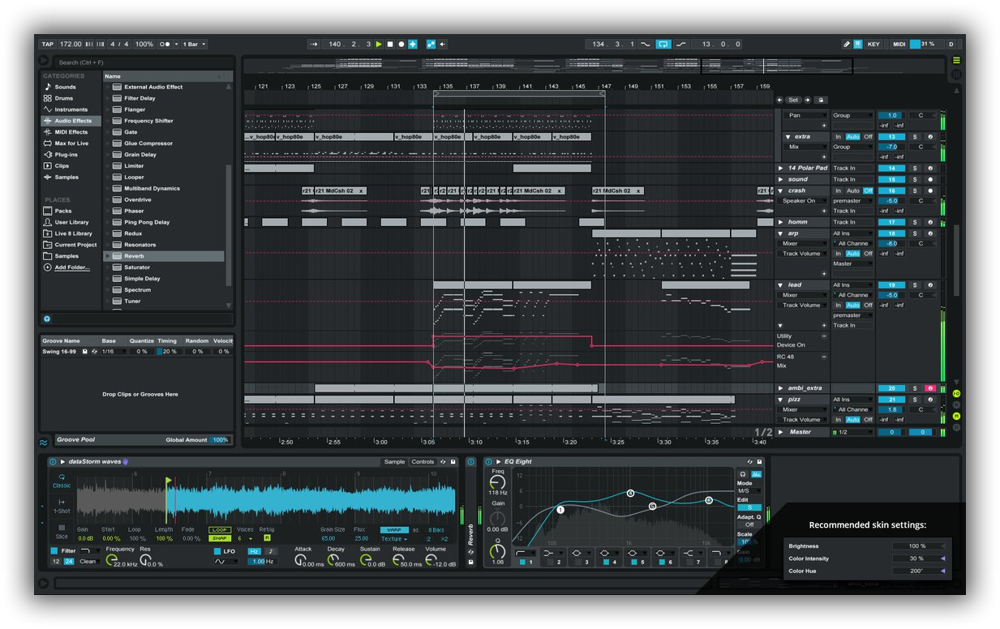

Spheres is dedicated to fueling the inspiration and curiosity of every student. Whether it's
exploring piano basics, composing songs or producing with music software, Spheres has the expertise.
This website was created for a Victoria, BC based music school start-up that teaches a range of
musical technologies. The site was created in Angular 5 with an Express.js / MongoDB backend in
anticipation of future development that will add HTML5/js browser learning games to reinforce musical
lessons. The following project "Noterize" is a prototype of such a musical learning game.
Noterize
Quickly memorize musical notation
Built with C#, VS, SQLite, N-Unit

Gameplay: User pick notes they want to memorize by selecting from checkboxes on startup. User can
input from typing keyboard or from any USB midi keyboard device. User chosen notes will then be served
randomly for 1 minute scoring +5 for correct answers and -3 for incorrect. Practice sets can be saved
as user presets to be loaded in future sessions.
Pressing 'Learn' button activates a learning optimization that will observe a user through their
first round and then optimize via spaced repitition. The following rounds will be weighted to allow players
increased exposure to notes they are weak with and decreased exposure to notes they have memorized.
This increases the efficiency of their learning curve.
Acoustic Training
Audio training web application (-WIP-)
Built on a MEAN stack with Passport.js, Bcrypt.js, Jsonwebtoken, Mongoose, Nodemailer
Learn to hear how different audio engineering tools process signals. Only by studying the subtle nuances
of sound can one become an effective sound designer, producer or sound technologist.
This website has been created to host a profitable, online sound engineering curriculum that will teach
users to hear the effects of many acoustic processes - compression, saturation, limiting, filtering, gain-structure,
panning, delay, phaser, chorus and many more.
In preperation for users being able to register, login and use the web app, the backend has been built using
Express.js and Mongoose / MongoDB with authentication by Passport, Jsonwebtoken and Bcrypt . Users will play the games
in the browser but be able to save their own profile, presets, example wave files, statistics, progress, goals and other deactivated.
Dvorak
A typing app designed to master typing the Dvorak layout
Built with C#, VS, SQLite, N-Unit

Gameplay: User picks keys they require practice with by selecting from the rendered keyboard on startup. User chosen keys
will then be served randomly for 1 minute scoring +5 for correct answers and -3 for incorrect. Practice sets can be saved
as user presets to be loaded in future sessions.
Pressing 'Focus' button activates a learning optimization that will observe a user through their
first round and then optimize via spaced repitition. The following rounds will be weighted to allow players
increased exposure to keys they are weak with and decreased exposure to keys they are competent with.
This increases the efficiency of their learning curve.
Esylus Music
Original compostions and production studio work
Composed, mixed & mastered with Ableton and Izotope

An acoustic whisper in the dark - Esylus pushes classical elements to the forefront of production with nylon string guitars,
orchestra and grain delays. Listen as instruments modulate and perish, only to be reborn again.
Kousk Music
Production studio work
Mixed & Mastered with Ableton and Izotope
Drawing from the natural orchestra of chirping birds, howling monkeys and growling pumas, Kousk weaves a musical adventure through
a vibrant jungle of sounds. With intention to design an environment of synchronized movement and growth, her music explores the
spirit of imagination.
Lead R&D sound designer for international touring sound company - PK Sound. Developed multiple industry loudspeakers including
the "Trinity", PK's flagship large-format line array. Head of Acoustic lab responsible for all loudspeaker measurement activities
and predictive sound analysis generic loudspeaker library compilation. Lead sound tech / system engineer for hundreds of concerts
taking place all over North America and Europe for crowds of up to 25 000. Lead sound educator for external clients and internal
junior technicians.